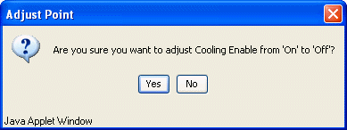

pour envoyer les données au contrôleur
pour envoyer les données au contrôleurSur un poste client, il est possible de régler des valeurs numériques à partir de l’écran des Appareils.
Pour régler une valeur numérique en mode graphique :
1 affichez la page dans laquelle se trouve la valeur à régler, comme indiqué dans la section « Affichage d'une page graphique » de ce manuel, puis cliquez sur le bouton ou le pictogramme permettant la modification de la valeur.
Ou :
visualisez la valeur à régler dans les Appareils comme indiqué dans la section « Affichage du système Trend » de ce manuel, puis cliquez sur la valeur à régler à partir du menu contextuel et sur l'option Modifier du menu proposé.
La boîte de dialogue Modifier s'affiche :

2 cliquez sur Oui pour modifier la valeur ou sur Non pour la laisser telle quelle.
Si vous accédez au 963 Server en mode texte, le réglage n’est possible qu'à partir d'une page graphique selon une méthode différente.
Pour régler une valeur numérique en mode texte :
1 affichez la page dans laquelle se trouve la valeur à régler comme indiqué dans la section « Affichage d'une page graphique » de ce manuel ;
2 cliquez soit sur Régler, soit sur Ne pas régler ;
3 cliquez sur pour envoyer les données au contrôleur